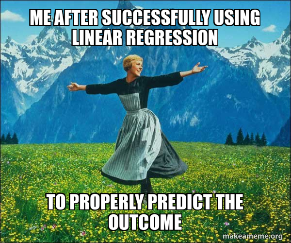
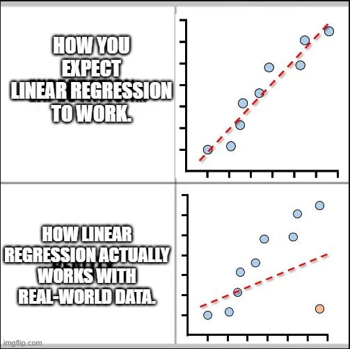
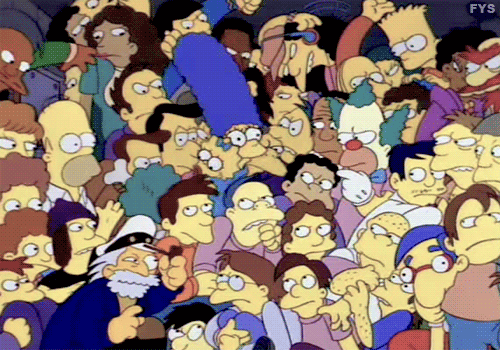
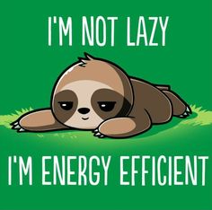

Sesión de laboratorio 3: Problemas de Regresión
Objetivos de la sesión
🎯 Objetivo general: Entender el modelado de regresión para que podamos construir predictores que generalicen bien y produzcan estimaciones fiables e interpretables.

En problemas aplicados, la calidad de un modelo de regresión depende no solo del algoritmo, sino de cómo planteamos el problema, preparamos las entradas y evaluamos los resultados. Incluso un modelo lineal simple puede fallar estrepitosamente si los predictores están en escalas muy diferentes, si algunas variables son colineales o si puntos influyentes dominan el ajuste. El preprocesamiento para regresión, por tanto, incluye los pasos habituales de limpieza y escalado, además de un análisis diagnóstico de los supuestos del modelo (linealidad, homocedasticidad, independencia de los errores) y de la influencia de valores atípicos y puntos con alto apalancamiento.Esta sesión desarrollará una intuición sobre estos problemas y mostrará cómo afectan tanto a la predicción como a la interpretación. Examinaremos el comportamiento de los mínimos cuadrados ordinarios, aprenderemos por qué y cuándo la regularización (Ridge y LASSO) es útil, y practicaremos la selección de hiperparámetros mediante validación cruzada. También aprenderás qué métricas son apropiadas para diferentes objetivos (precisión de predicción vs. robustez vs. interpretabilidad) y cómo comparar modelos sin procesar, de referencia y regularizados en datos reservados.
Dominar estas ideas te ayudará a evitar errores comunes —sobreajuste, fuga de datos (data leakage), valores de R^2 engañosos, manejo deficiente de la multicolinealidad y estimaciones de coeficientes con exceso de confianza—, de modo que tus análisis de regresión sean precisos y fiables.
Actividades propuestas
A lo largo de estas actividades trabajarás con el conjunto de datos California Housing. Este conjunto contiene información sobre los valores de las viviendas en distritos de California durante el censo de 1990, e incluye atributos demográficos y geográficos como ingreso medio, número medio de habitaciones y densidad de población. Es un conjunto de referencia para tareas de regresión, donde el objetivo es predecir el valor medio de la vivienda a partir de las demás variables.
Puedes descargar el conjunto en formato CSV desde este enlace (si lo abres en el navegador, haz clic derecho y selecciona “Guardar como…” para descargarlo). Una explicación de cada atributo está disponible en la documentación de scikit-learn.
Carga el conjunto de datos en Orange y selecciona la variable objetivo para nuestro problema (median_house_value). Una vez que esté disponible en tu flujo de trabajo, la usaremos para explorar el comportamiento de la regresión lineal, estudiar los riesgos del sobreajuste y entender cómo las técnicas de regularización y la validación cruzada pueden mejorar el rendimiento del modelo. Como aprendimos la semana pasada, es crucial dividir los datos en conjuntos de entrenamiento y prueba para evaluar el rendimiento en datos no vistos.
1. Regresión lineal
🎯 Objetivo: Ajustar e interpretar un modelo de regresión lineal, y comprender sus supuestos y limitaciones.

La regresión lineal es el enfoque más sencillo para modelar resultados continuos. Asume una relación lineal entre los predictores (features) y la variable objetivo. Aunque es fácil de ajustar e interpretar, su fiabilidad depende de cuánto cumplan los datos ciertos supuestos: linealidad, independencia de los errores, homocedasticidad (varianza constante) y ausencia de multicolinealidad fuerte entre los predictores.La idea de la regresión lineal es encontrar los coeficientes (pesos) para cada predictor que minimicen la suma de los cuadrados de las diferencias entre los valores observados y los predichos. Esto se conoce como el método de Mínimos Cuadrados Ordinarios (OLS) y tiene la siguiente formulación matemática: \[ \min_{\mathbf{w}} \sum_{i=1}^{n} (y_i - \hat{y}_i)^2 \] donde \(y_i\) es el valor real, \(\hat{y}_i\) es el valor predicho, \(\mathbf{w}\) es el vector de coeficientes y \(\mathbf{x}_i\) es el vector de características para la observación \(i\).
En Orange, puedes usar el widget Linear Regression para construir un modelo que prediga el valor de las viviendas a partir de los atributos de entrada. El widget también permite inspeccionar los coeficientes de cada predictor haciendo clic en la parte inferior de la ventana; estos indican el cambio estimado en la variable objetivo por un cambio de una unidad en la característica (manteniendo las demás constantes). Para observar mejor los coeficientes puedes usar el widget Bar Plot para visualizarlos.
Recuerda que coeficientes grandes pueden ser una señal de multicolinealidad o sobreajuste.
Repite el proceso usando el widget Continuize para estandarizar las características antes de ajustar el modelo. ¿Observas cambios en los coeficientes?
📝 Preguntas:
- ¿Qué variables parecen tener el efecto más fuerte sobre los precios de la vivienda según los coeficientes de regresión?
- ¿Podemos usar estos coeficientes para evaluar la importancia de las variables? ¿Por qué sí o por qué no?
- ¿Observas coeficientes inusualmente grandes o inestables? ¿Qué podría indicar esto?
2. Evaluación del rendimiento del modelo
🎯 Objetivo: Entender las distintas métricas para evaluar el rendimiento de un modelo.
Al evaluar un modelo de regresión, es crucial medir su desempeño en datos no vistos para asegurar que generalice bien. Normalmente se divide el conjunto en entrenamiento y prueba: el primero se usa para ajustar el modelo y el segundo para evaluarlo.
En Orange puedes usar el widget Predictions para evaluar el rendimiento de tu modelo de regresión. Este widget ofrece varias métricas, entre ellas:
Error cuadrático medio (MSE): El promedio de los cuadrados de las diferencias entre los valores predichos y los reales. Penaliza más los errores grandes que el MAE, por lo que es sensible a valores atípicos. Se calcula como: \[ MSE = \frac{1}{N} \sum_{n=1}^{N} (y_n - \hat{y}_n)^2 \] donde \(y_n\) es el valor real, \(\hat{y}_n\) es el valor predicho y \(N\) es el número de observaciones.
Raíz del error cuadrático medio (RMSE): La raíz cuadrada del MSE, proporcionando una métrica de error en las mismas unidades de la variable objetivo. Se calcula como: \[ RMSE = \sqrt{MSE} = \sqrt{\frac{1}{N} \sum_{n=1}^{N} (y_n - \hat{y}_n)^2} \]
Error absoluto medio (MAE): El promedio de las diferencias absolutas entre los valores predichos y los reales. Da una idea de cuánto se desvían las predicciones, en promedio. Se calcula como: \[ MAE = \frac{1}{N} \sum_{n=1}^{N} |y_n - \hat{y}_n| \]
Error porcentual absoluto medio (MAPE): El promedio del porcentaje absoluto de la diferencia entre predicción y realidad. Es útil para entender el error en términos relativos, especialmente cuando la variable objetivo tiene un rango amplio. Se calcula como: \[ MAPE = \frac{100\%}{N} \sum_{n=1}^{N} \left| \frac{y_n - \hat{y}_n}{y_n} \right| \]
R-cuadrado (\(R^2\)): La proporción de la varianza de la variable objetivo que es explicada por el modelo. Varía entre 0 y 1 (aunque puede ser negativo para modelos muy malos), siendo valores más altos indicativos de mejor ajuste. Se calcula como: \[ R^2 = 1 - \frac{\sum_{n=1}^{N} (y_n - \hat{y}_n)^2}{\sum_{n=1}^{N} (y_n - \bar{y})^2} \] donde \(\bar{y}\) es la media de los valores reales.
Usa el widget Predictions para evaluar tu modelo de regresión lineal sobre el conjunto de prueba. Conecta la salida del widget Linear Regression al widget Predictions, y conecta también la salida del Data Sampler (conjunto de prueba) al Predictions. Explora las diferentes métricas que proporciona el widget Predictions. Compara los resultados con y sin estandarizar las características usando el widget Continuize.
Traza los valores predichos frente a los reales con el widget Scatter Plot para visualizar el rendimiento del modelo. Puedes activar la opción “Show regression line” en el Scatter Plot para ver qué tan bien se alinean las predicciones con los valores reales.
📝 Preguntas:
- ¿Qué métrica de evaluación crees que es más apropiada para este problema de regresión? ¿Por qué?
- ¿Cómo afecta la estandarización de las características al rendimiento del modelo?
- Según el diagrama de dispersión, ¿qué tan bien captura el modelo la relación entre las características y la variable objetivo?
3. Regularización
🎯 Objetivo: Explorar los efectos de las técnicas de regularización en el rendimiento del modelo y la diferencia entre \(\ell_1\) y \(\ell_2\).
Hemos visto que la regresión lineal puede ser sensible a la multicolinealidad y al sobreajuste, especialmente cuando hay muchos predictores. Las técnicas de regularización, como Ridge (regularización \(\ell_2\)) y LASSO (regularización \(\ell_1\)), ayudan a mitigar estos problemas añadiendo un término de penalización a la función de pérdida. Esto incentiva modelos más simples que generalizan mejor a datos no vistos.
En Ridge, el término de penalización es la suma de los cuadrados de los coeficientes, mientras que en LASSO es la suma de los valores absolutos de los coeficientes. Las formulaciones matemáticas son:
- Ridge Regression: \[ L_{Ridge}(\mathbf{w}) = \sum_{i=1}^{N} (y_i - \hat{y}_i)^2 + \lambda \sum_{j=1}^{M} w_j^2 \]
- LASSO Regression: \[ L_{LASSO}(\mathbf{w}) = \sum_{i=1}^{N} (y_i - \hat{y}_i)^2 + \lambda \sum_{j=1}^{M} |w_j| \]
donde \(\lambda\) es el parámetro de regularización que controla la intensidad de la penalización, \(M\) es el número de predictores y \(w_j\) son los coeficientes.
En Orange puedes usar las opciones Ridge Regression y Lasso Regression en el widget Linear Regression para ajustar modelos con estas técnicas. Experimenta con diferentes valores del parámetro de regularización \(\lambda\) (a menudo llamado alpha en los widgets) para ver cómo afectan a los coeficientes y al rendimiento del modelo.
3.1. Regularización frente al sobreajuste
Para ilustrar los efectos de la regularización, crearemos un conjunto de datos sintético con características repetidas que pueden inducir sobreajuste. Puedes descargar el conjunto con características repetidas de MedInc en el siguiente enlace: Descargar conjunto con características redundantes.
Carga el conjunto en Orange y ajusta un modelo de regresión lineal sin regularización. Observa los coeficientes y el rendimiento del modelo en el conjunto de prueba usando el widget Test & Score. Luego ajusta modelos Ridge y LASSO con distintos valores de \(\lambda\) y compara sus coeficientes y rendimiento.
📝 Preguntas:
- ¿Cómo cambian los coeficientes con distintos valores de \(\lambda\) para Ridge y LASSO?
- ¿Qué técnica de regularización parece funcionar mejor en este escenario? ¿Por qué?
- ¿Cómo ayuda la regularización a mitigar el sobreajuste en este caso?
3.2. Validación cruzada para sintonizar hiperparámetros
🎯 Objetivo: Usar validación cruzada para seleccionar el parámetro de regularización \(\lambda\) óptimo para Ridge y LASSO.
En esta sección trabajaremos con un escenario de alta dimensionalidad con características polinomiales. Puedes descargar el conjunto con características polinomiales desde: Descargar conjunto polinomial.
Elegir el valor correcto de \(\lambda\) es crucial para balancear sesgo y varianza. Un enfoque común es usar validación cruzada: particionar los datos de entrenamiento en varios pliegues, entrenar el modelo en algunos pliegues y validar en el resto, repitiendo esto para distintos valores de \(\lambda\) y seleccionando el que minimice el error medio en las validaciones.

En Orange puedes usar el widgetTest & Score con validación cruzada para evaluar el rendimiento de Ridge y LASSO con distintos valores de $. Orange no dispone de un sintonizador de hiperparámetros automático, por lo que deberás crear un widget Linear Regression por cada valor de $y conectarlos al Test & Score. Asegúrate de incluir el widget de Preprocessing con la opción Standardize y pasarlo también al Test & Score para que la estandarización se haga dentro de cada pliegue y evitar fuga de datos.
Encuentra el valor óptimo de \(\lambda\) para Ridge y LASSO comparando su rendimiento en los pliegues de validación. Una vez seleccionado el mejor \(\lambda\), ajusta el modelo final con el conjunto de entrenamiento completo y evalúa su rendimiento en el conjunto de prueba.
📝 Preguntas:
- ¿Cuál es el valor óptimo de \(\lambda\) para Ridge y LASSO según la validación cruzada?
- ¿Cómo compara el rendimiento de los modelos finales con el modelo de regresión lineal sin regularización?
- ¿Cómo ayuda la validación cruzada a seleccionar el parámetro de regularización y mejorar la generalización del modelo?
Mini-proyecto: Problemas de regresión y regularización
En este mini-proyecto aplicarás lo aprendido sobre preprocesamiento y regularización en regresión.

Imagina que te unes a una iniciativa de investigación sobre arquitectura sostenible. El equipo trabaja con el conjunto de datos Energy Efficiency (disponible en el siguiente enlace). Contiene parámetros de edificios como área de muros, área de techo y área de acristalamiento, junto con dos variables objetivo: la carga de calefacción y la carga de refrigeración requerida para cada diseño. Para este ejercicio, debes elegir una de las dos variables objetivo para predecir. Parte de tu tarea es justificar por qué seleccionaste esa variable y cómo afecta tus decisiones de modelado.
El conjunto plantea varios retos útiles: varias variables están en escalas distintas, lo que puede distorsionar la influencia de los predictores si no se ajusta; además hay fuertes correlaciones entre entradas que pueden producir inestabilidad en modelos lineales. Estos problemas subrayan la importancia del preprocesamiento y la regularización.
Tu tarea es diseñar un flujo de trabajo en Orange que prepare este conjunto para modelado y luego construya un modelo de regresión lineal regularizado. Esto incluirá decisiones sobre transformaciones, si normalizar o estandarizar variables y cómo manejar predictores correlacionados. Después de preparar los datos, entrenarás un modelo con regularización, validarás la elección del parámetro de regularización mediante validación cruzada y finalmente evaluarás su rendimiento en un conjunto de prueba reservado.
No hay una única solución correcta. Lo importante es que puedas explicar y justificar tus decisiones.
Nota final
✨ ¡Felicidades por completar el Laboratorio 3! Has explorado los fundamentos del análisis de regresión, incluyendo ajuste de modelos lineales, evaluación de su rendimiento y aplicación de regularización para mejorar la generalización.
En la próxima sesión profundizarás en problemas de clasificación, aprendiendo a construir modelos que categorizan datos en clases distintas. Veremos diferentes algoritmos, métricas de rendimiento y estrategias para manejar conjuntos desbalanceados. ¡Disfruta el viaje en el mundo del aprendizaje automático! 🚀
📤 Cómo entregar
- Guarda/exporta tu informe completado como PDF.
- Renombra el archivo PDF siguiendo la convención de abajo.
- Ve a Aula Global → esta asignatura → Tareas → buzón de entrega “Lab 3”, y sube el PDF antes de la fecha límite.
- Adjunta también tu archivo de flujo de trabajo de Orange (.ows, guardado con Archivo > Guardar como… en Orange) en la misma entrega.
Nombre del archivo: Lab3_Apellido_Nombre.pdf (ej. Lab3_Garcia_Maria.pdf)